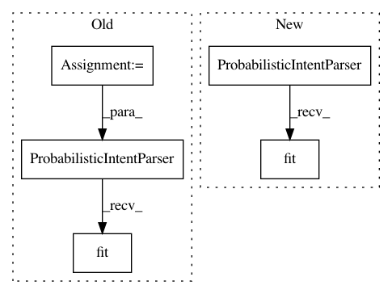

aa7a5124211456bf14340a7f0ea06e64af83c882,snips_nlu/tests/test_probabilistic_intent_parser.py,TestProbabilisticIntentParser,test_should_get_intents,#TestProbabilisticIntentParser#,147
Before Change
dataset = Dataset.from_yaml_files("en", [dataset_stream]).json
classifier_config = LogRegIntentClassifierConfig(random_seed=42)
parser_config = ProbabilisticIntentParserConfig(classifier_config)
resources = self.get_resources("en")
parser = ProbabilisticIntentParser(parser_config, resources=resources)
parser.fit(dataset)
text = "yala yili yulu"
// When
results = parser.get_intents(text)
After Change
dataset = Dataset.from_yaml_files("en", [dataset_stream]).json
classifier_config = LogRegIntentClassifierConfig(random_seed=42)
parser_config = ProbabilisticIntentParserConfig(classifier_config)
parser = ProbabilisticIntentParser(parser_config).fit(dataset)
text = "yala yili yulu"
// When
results = parser.get_intents(text)
In pattern: SUPERPATTERN
Frequency: 3
Non-data size: 5
Instances
Project Name: snipsco/snips-nlu
Commit Name: aa7a5124211456bf14340a7f0ea06e64af83c882
Time: 2019-01-17
Author: adrien.ball@snips.ai
File Name: snips_nlu/tests/test_probabilistic_intent_parser.py
Class Name: TestProbabilisticIntentParser
Method Name: test_should_get_intents
Project Name: snipsco/snips-nlu
Commit Name: aa7a5124211456bf14340a7f0ea06e64af83c882
Time: 2019-01-17
Author: adrien.ball@snips.ai
File Name: snips_nlu/tests/test_probabilistic_intent_parser.py
Class Name: TestProbabilisticIntentParser
Method Name: test_should_be_serializable_into_bytearray
Project Name: snipsco/snips-nlu
Commit Name: ee0dab4ec731092cb6a976c86320c7c681b42718
Time: 2019-01-17
Author: adrien.ball@snips.ai
File Name: snips_nlu/tests/test_probabilistic_intent_parser.py
Class Name: TestProbabilisticIntentParser
Method Name: test_should_be_serializable_into_bytearray